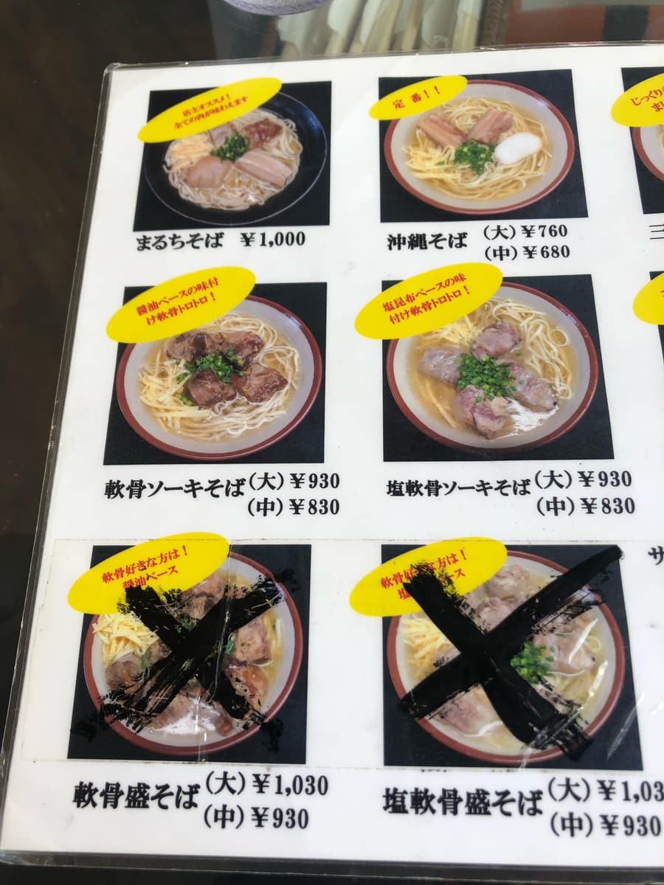
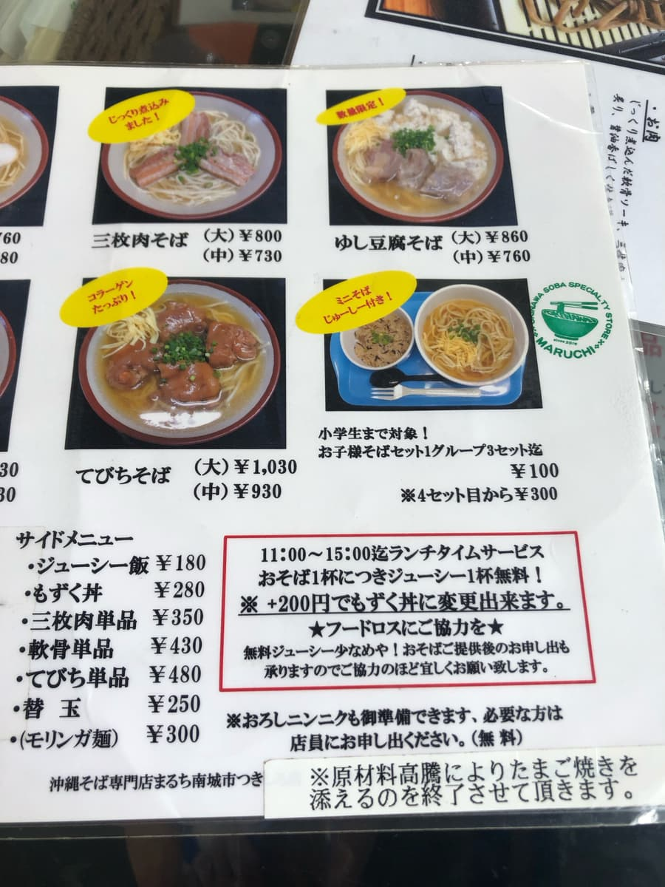
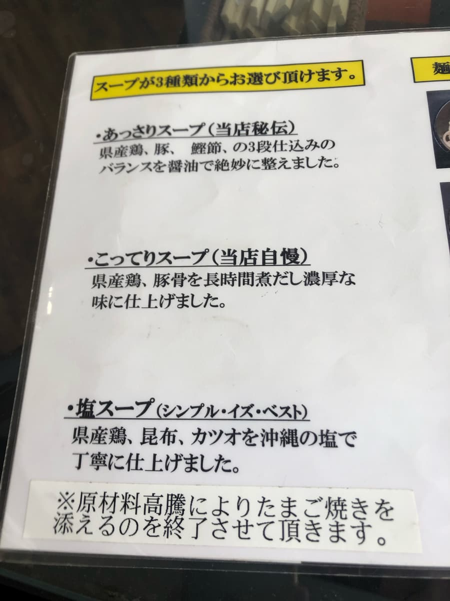
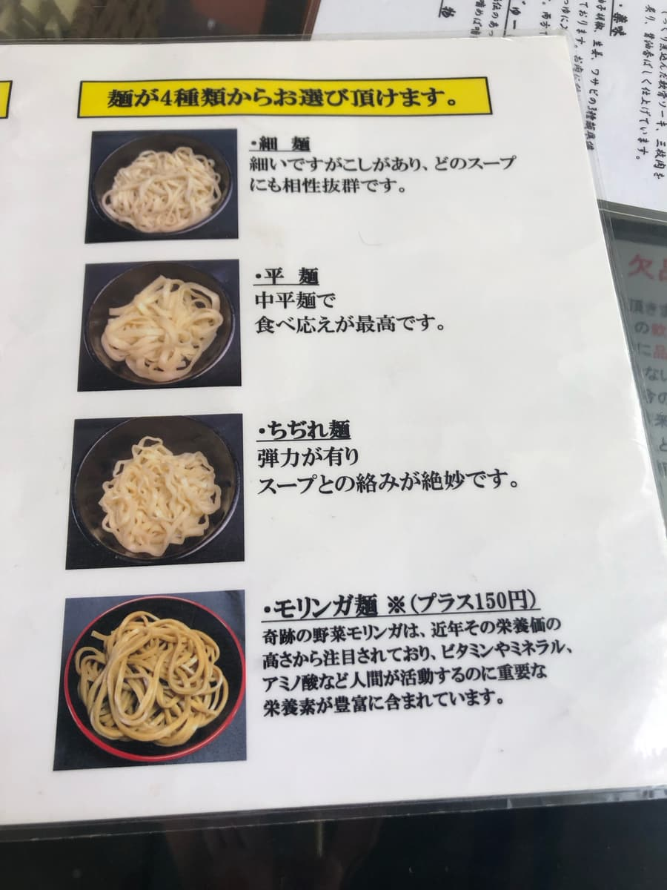
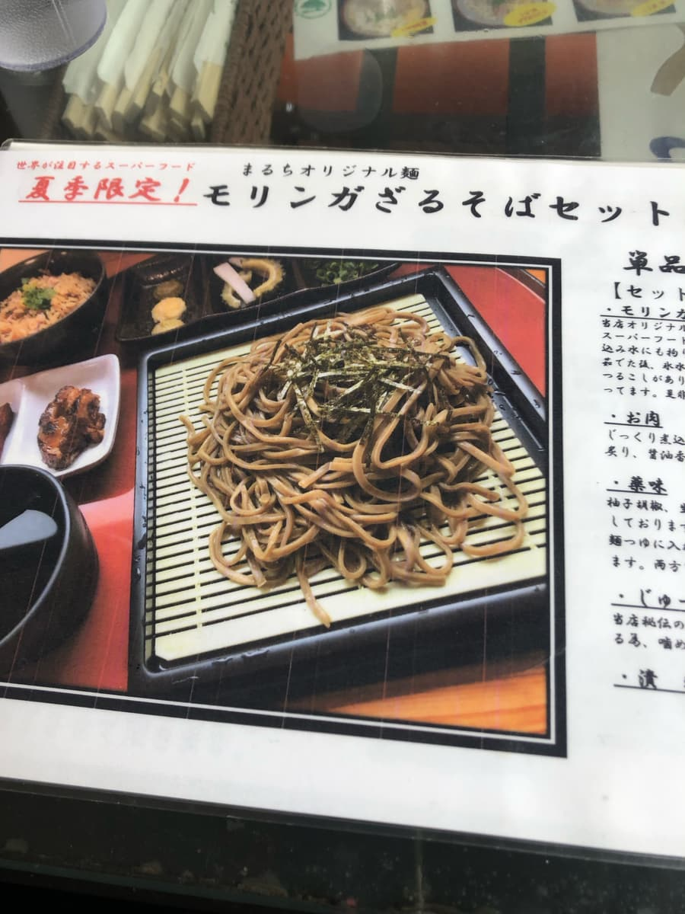
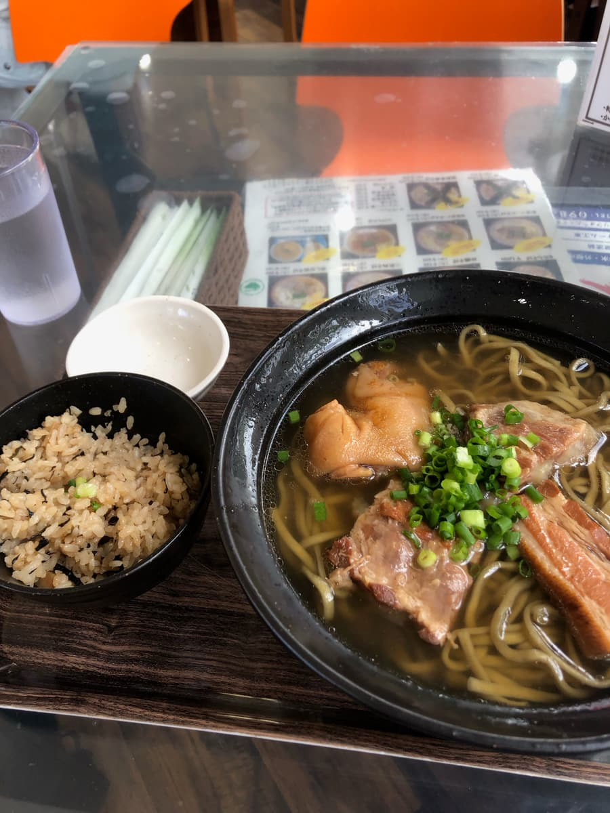
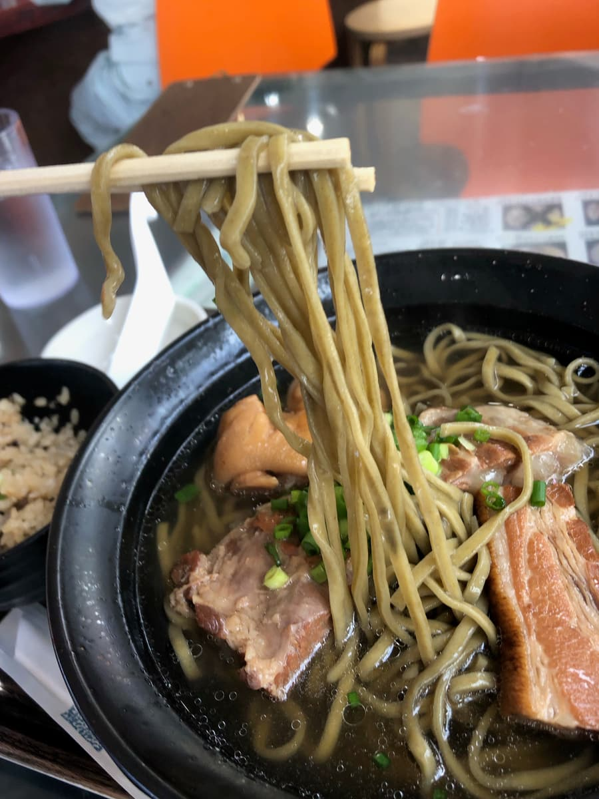

※這篇文章是用AI（Chat GPT4o）製作，再由我部分補寫哈哈
2024年7月吃的😁 這次造訪了位於南城市月代的沖繩麵專賣店「丸智」。吃了和店名相同的「丸智麵」，就來好好（？）分享一下感想吧！

首先是「丸智」的外觀。紅色看板就是標誌。進到店內，明亮又整潔的店裡，當地人們在和樂融融的氣氛中享用餐點。





這次從菜單中點的是和店名相同的「丸智麵」。湯頭聽從店員推薦，選了最受歡迎的「清爽」。

過了一會兒，「丸智麵」來了😄
先喝一口湯。是雞、豬、柴魚的混合高湯，豬骨底的味道很突出呢。

接著吃麵。麵條我選了辣木麵。聽說是使用名為蔬菜辣木的超級食物做成的麵，含有豐富的維生素、礦物質、胺基酸等人類活動所需的重要營養價值。感覺稍微健康一點(^0^;)
但是老實說，吃起來和普通的細直麵沒有太大的味道差別。口感也沒有特別，就是普通的軟麵。因為期待很高，所以有點可惜。
配料是所謂的「全部配料」，有三層肉、豬腳、軟骨排骨。全部都很軟嫩，但三層肉還殘留一些筋，口感有點讓我在意。
其實我以前在古民家風的中城店吃過「丸智麵」，之後才發現這次造訪的「丸智」和那家是同一系列的店。
評分（9分/15分）：算是普通的感覺。之前去的中城店觀光客很多，但這家感覺當地客人比較多。因為三層肉的筋感（口感偏韌）和辣木麵的味道衝擊感有點弱，所以給了這個評分。預計2024年8月24日左右開幕的Costco就在附近，從Costco回程的用餐，要不要來一次看看呢😄
麵：★★★☆☆（3）
湯頭：★★★☆☆（3）
配料：★★★☆☆（3）